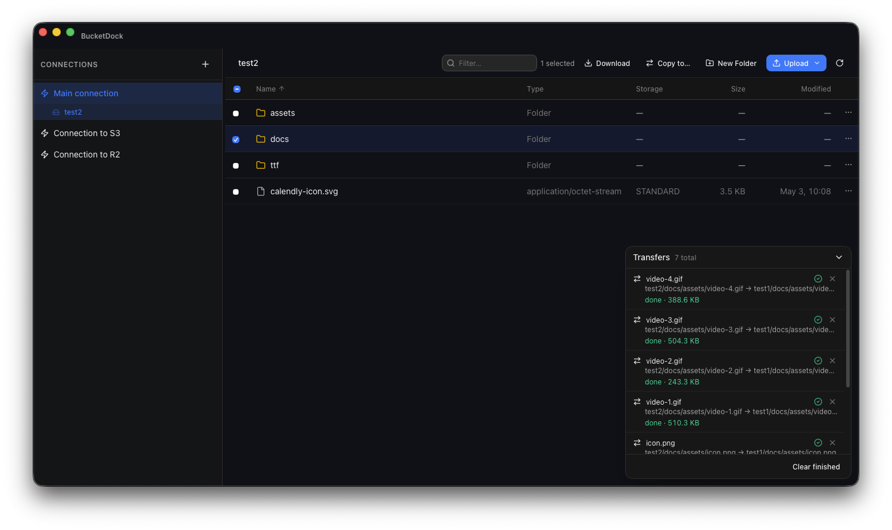

An open-source S3 client
for macOS.
Connect AWS S3, Cloudflare R2 and any S3-compatible endpoint. Browse buckets, upload, download and copy between providers — from a native Mac app.

Multi-provider
AWS S3, Cloudflare R2, MinIO, Backblaze B2 and any S3-compatible endpoint. Save as many connection profiles as you need.
Bucket browser
Folder navigation, breadcrumbs, multi-select, drag-and-drop upload and recursive download. Filter and sort by name, size, class or date.
Transfer queue
Every upload, download and copy tracked in a bottom dock. Cancel running transfers or retry failures individually.
Cross-provider copy
Copy files and folders between buckets on different providers. Pick a destination and prefix; BucketDock handles the rest.
Inline preview
Open images, audio, video, PDFs and plain text directly in the app. No temp files, no downloads.
Keychain-backed
Credentials live in the macOS Keychain. S3 requests are signed by the Rust process — never exposed to the browser runtime.
Get BucketDock for macOS
Universal binary, Apple Silicon and Intel. Apache 2.0.